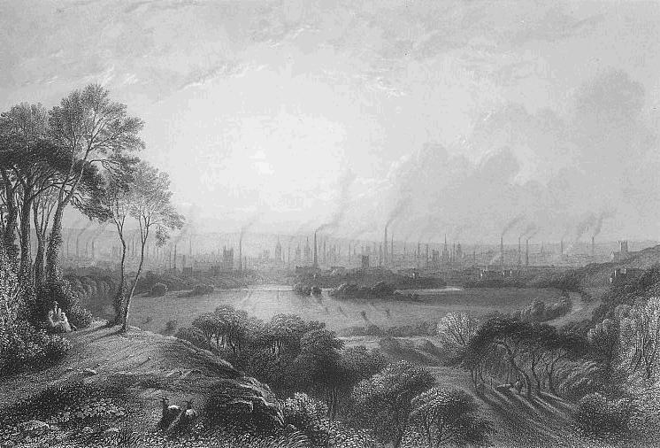
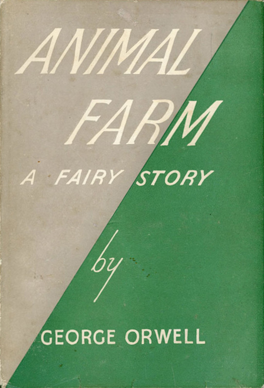
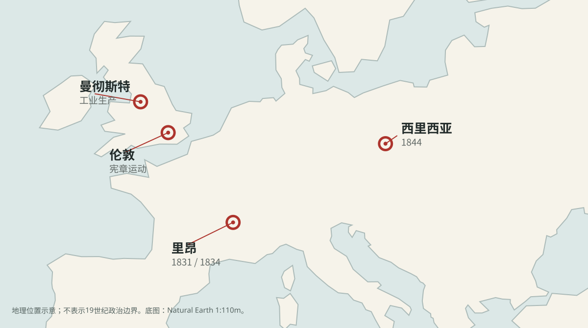
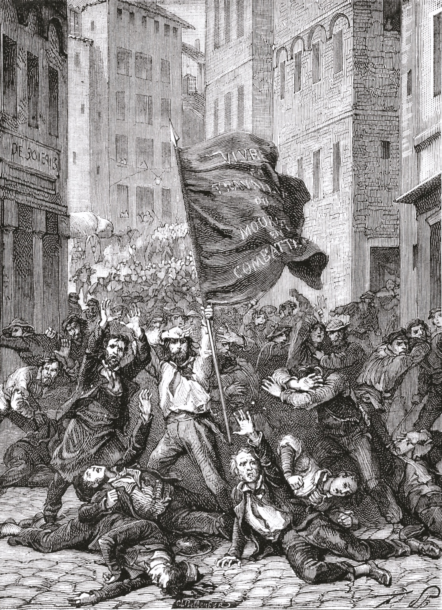
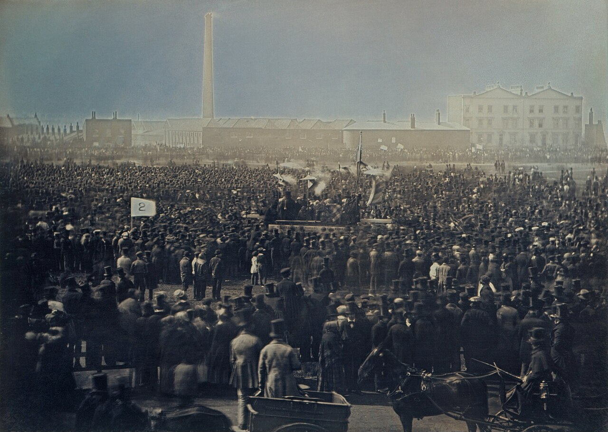
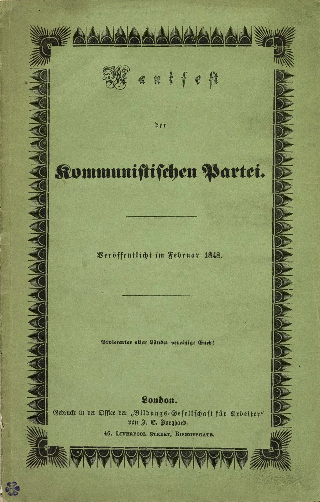

马克思主义基本原理
马原课阅读分享
从社会变革到人的解放
分享人：邓嘉宁
图像：1835年动力织机版画 · Wikimedia Commons
共同的观察框架
把“社会变革”拆成四个问题
社会变革通向人的解放？
01谁劳动？生产如何组织
劳动由谁承担
劳动由谁承担
02谁决定？资料、规则、决策权
在谁手中
在谁手中
03谁获得？劳动成果如何分配
谁享有特权
谁享有特权
04谁发展？生活与参与条件
是否改善
是否改善
分析起点：从经济生产与社会结构，追问政治、思想和阶级关系。据恩格斯《宣言》1883年德文版序言概括
阅读方式
同一组问题，放进两种材料

01 · 历史现场
19世纪欧洲
用时间、地点与诉求，考察生产增长中的社会关系。
事实材料，允许核查01先观察

02 · 文学寓言
《动物农场》
借有苏联历史影射的故事，追问变革后的决策与分配。
提出问题，不替代史实02再追问
请继续用四个问题观察，但记住：两种材料的证据性质不同。
第一幕 · 19世纪欧洲
先判断
机器生产更多，
工人会自动
过得更好吗？
先保留答案。接下来分别看生产能力、财产关系与工人的行动。
图：1835年动力织机示意，Wikimedia Commons
观察 A · 生产方式发生变化
生产力上升，关系也在重组
曼彻斯特工业景象
机器与工厂→更高产出≠自动共享
生产资料资本所有者掌握厂房、机器和组织生产的权力。
劳动位置许多工人依靠出售劳动力获得工资。
分配与条件工资、工时、劳动条件与政治权利成为争议。
观察 B · 时间与地点
工人运动不是一个抽象名词

里昂 · 1831 / 1834丝织工人两次起义
英国 · 1838 起宪章运动争取政治改革
西里西亚 · 1844织工因贫困与报酬问题反抗
伦敦 · 1848《共产党宣言》发表
观察 B · 一条有差异的时间线
从个体困境到集体表达
1831/34里昂丝织工人
两次起义
两次起义
1838英国宪章运动
提出政治诉求
提出政治诉求
1844西里西亚织工
起义
起义
1848《共产党宣言》
发表
发表
共同点不是“同一条运动路线”，而是劳动者开始以集体形式表达现实困境。
观察 B · 历史图像
诉求并不相同，行动都已发生

里昂，1831
丝织工人起义：报酬与生计问题成为公开冲突。

伦敦，1848
宪章运动集会：劳动者同时争取政治表达。
1848 · 《共产党宣言》
问题从“产出多少”转向“关系如何”

工业发展创造了巨大的生产力。
但劳动者的处境，还取决于生产资料占有、劳动组织与分配关系。
第一场的暂时答案：增长是条件，不是自动实现共同解放的机制。
从历史现场转向文学寓言
02
如果旧的支配者被赶走，
共同劳动的人就能共同决定吗？
把同一组问题带进《动物农场》：劳动 · 决策 · 分配 · 发展
第二幕 · 《动物农场》
农场主走了，平等来了吗？
起点 动物赶走剥削它们的人类农场主。
承诺 共同劳动、共同经营，“所有动物一律平等”。
再追问 谁能提出决议、解释规则、分配成果？
观察 A · 情节中的四次转折
支配关系怎样一点点形成？
①
资源先分开
牛奶、苹果先供给猪；“脑力劳动”成为解释特权的理由。
②
辩论被取消
拿破仑驱逐雪球；公开会议失去决定农场事务的作用。
③
规则被改写
少数角色掌握读写和解释权，普通动物难以核实“七诫”。
④
生活分化
多数动物继续劳动，猪获得越来越多的权力与特权。
关键链条：共同劳动 → 权力集中 → 分配和信息失衡 → 平等原则失去现实内容。
观察 B · 墙上的“七诫”
原则写在墙上
所有动物一律平等。
文字规则公开、可以被读到
→
问题谁有能力核实它是否被改写？
观察 B · 墙上的“七诫”
原则也可以被改写
所有动物一律平等，
但有些动物比其他动物更加平等。
从“人人平等”到“特权合理”：规则、记忆和解释权集中在少数角色手中。
回答四问 · 拆开“猪变坏了”
为什么多数动物难以阻止？
劳动基础多数动物
持续劳动
持续劳动
农场仍由共同生产维持
关口 01决策权收拢
提议、辩论、决定由少数角色控制
关口 02解释权收拢
读写、记忆与规则解释难以核实
分配结果特权扩大
共同劳动的成果，不再同样共同享有
劳动仍是共同的 → 决策与信息不再共同 → 平等原则失去现实支撑
两场放在一起
同样追问“成果如何成为人的发展”
01 · 历史现场
变化机器、工厂与生产能力增长
矛盾增长与劳动者处境可能并存冲突
关键问题财富如何产生、占有与分配？
02 · 文学寓言
变化农场主被赶走，农场由动物经营
矛盾共同劳动与少数角色的权力集中
关键问题谁参与决策、监督规则与分配？
两种材料性质不同，但都说明：改变生产能力或管理位置，还不能替代对实际社会关系的考察。
Part 4 · 怎样理解人的解放
从宏大的变革，回到人的现实条件
把目光重新放回
具体的人
具体的人
01
生活保障
劳动所得与基本生活，是否真正改善？
02
可支配时间
是否有离开生存压力的时间与精力？
03
发展机会
教育、文化与能力成长的机会是否扩大？
04
公共参与
能否理解、表达并影响共同生活的规则？
生产总量是重要条件；这些条件是否落到每个人身上，还需要继续追问。
回到中国的具体历史条件
目标需要落到实践与效果
01 / 方向
价值目标
共同富裕、促进人的全面发展，提出发展的方向。
02 / 观察
具体检验
生活、机会、表达与回应，能否在实际制度中改善？
03 / 修正
回到实践
依据具体材料评价效果，再调整认识与行动。
不能把19世纪欧洲经验机械照搬，也不能用一个寓言直接判断今天的现实。
谢谢观赏
分享人：邓嘉宁